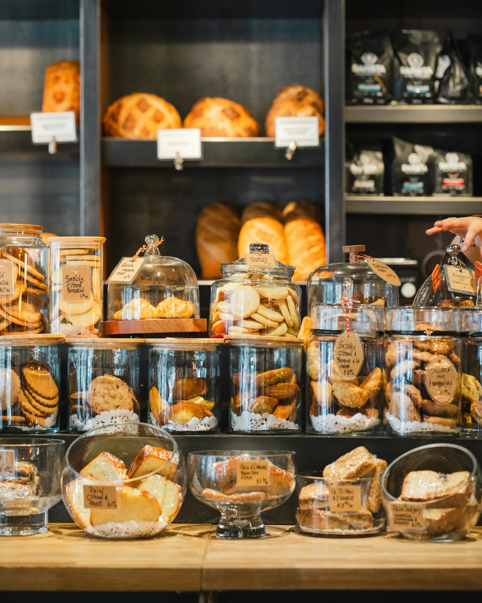

Thank you for visiting Tatev's Bakery! We hope you enjoy the sweet foods that we offer at our bakery.
Our recipes are brought to you from themealdb.com and we could not be more grateful to be collaborating with them on such a special project.
Tatev's Bakery came to life in 2011 but its dream had blossomed when our founder had baked a lemon cake at her elementary school.
This dream is now a dream we gladly share with you as we give you a piece of our greatest recipes.